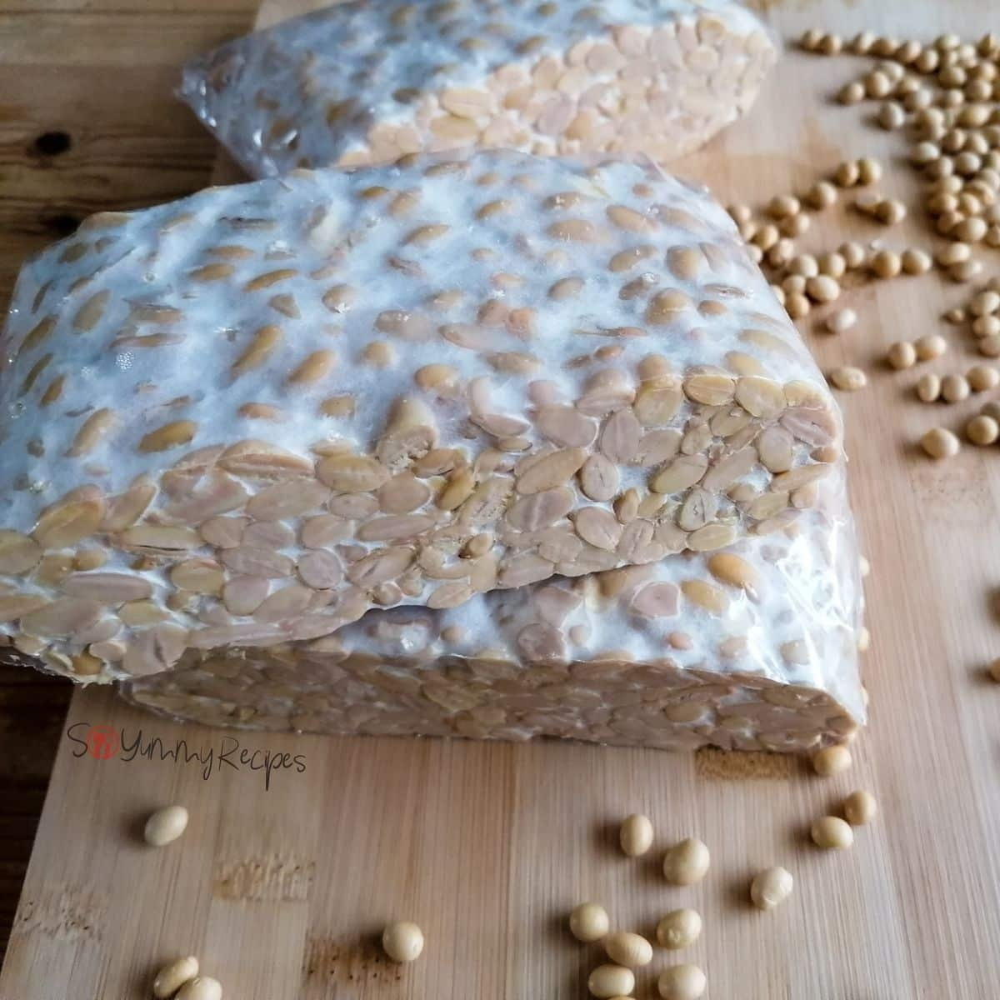
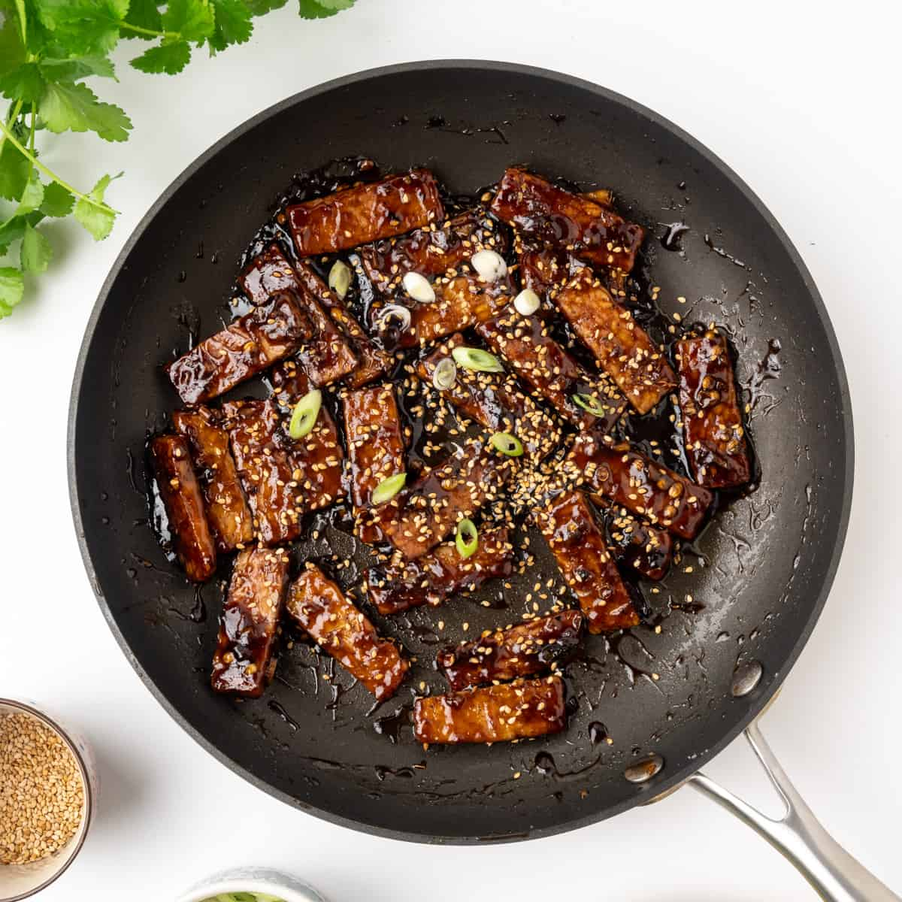
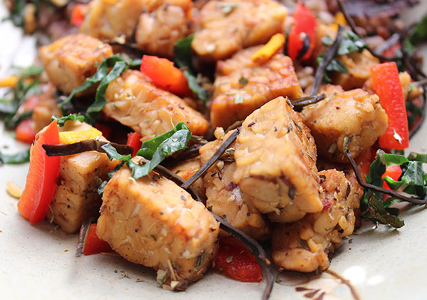

Tempeh is a traditional plant-based food made from fermented soybeans.
It has a firm texture, a slightly nutty flavour, and is rich in protein,
fibre, and nutrients. Because it absorbs flavours well, tempeh is very
versatile and can be marinated, fried, grilled, or added to many dishes.
It's a popular, wholesome alternative to meat and has been enjoyed for
centuries, especially in Indonesian cuisine.
If you need any further suggestions or have questions about tempeh,
feel free to reach out.
Bon apetit!
Anda
What Is Tempeh?
Czym jest tempeh?

How to Prepare Tempeh
Jak przygotować tempeh
Fry it
Smaż go
- Cut the tempeh into cubes, strips, or any shape you like
- Marinate with salt, garlic, coriander, and turmeric
- Let it rest for 5–10 minutes
- Lightly fry in butter or any oil until golden
Eat it raw
Jedz na surowo
- It's best enjoyed fresh and raw with your favourite sauce or salsa
- You can also slice it and add it to salads
Meat substitute
Zamiennik mięsa
- Think of it like diced chicken—use it in curries, sautés, or even as a steak-style dish
- Enjoy tempeh as a protein-rich addition to any meal


How to Store Tempeh
Jak przechowywać tempeh
- Store fresh tempeh in the refrigerator and use within a few days
- Once opened, keep it wrapped or in an airtight container to maintain freshness
- Tempeh can also be frozen to extend its shelf life—simply thaw before use